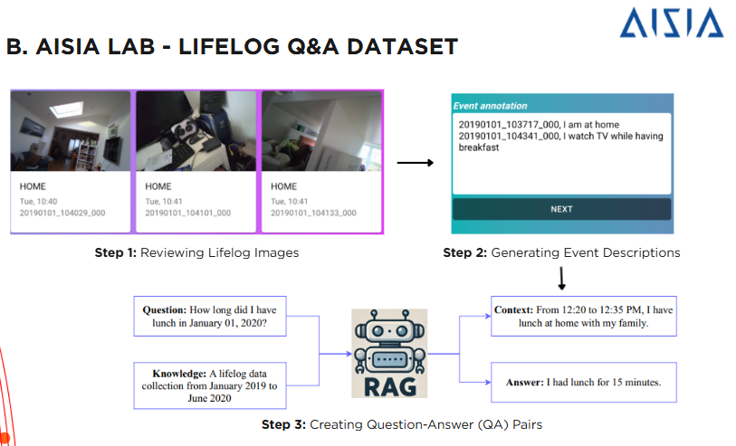

AISIA Lab - Lifelog Q&A Dataset
Research Intern · 8/2024 - 10/2024
- Processed and annotated multimodal data (images and timestamps) to generate high-quality question–answer (QA) pairs for large language models (LLMs)
- Evaluated and refined LLM-generated answers to ensure factual accuracy and consistency across the dataset.
- Collaborated with a research team to develop a benchmark of over 14,000 QA pairs, contributing to a Retrieval-Augmented Generation (RAG) system that achieved 94.35% Recall@20.
- Co-authored a research paper published in The 15th ACM ICMR (2025), focusing on QA evaluation techniques for LLMs
- Received a 9.6/10 internship evaluation, recognizing data quality and teamwork performance.